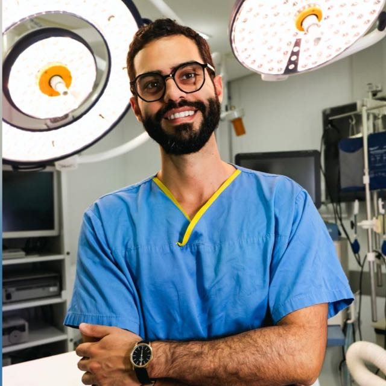
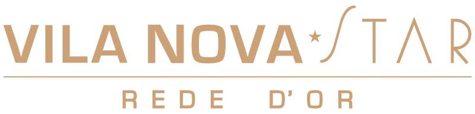
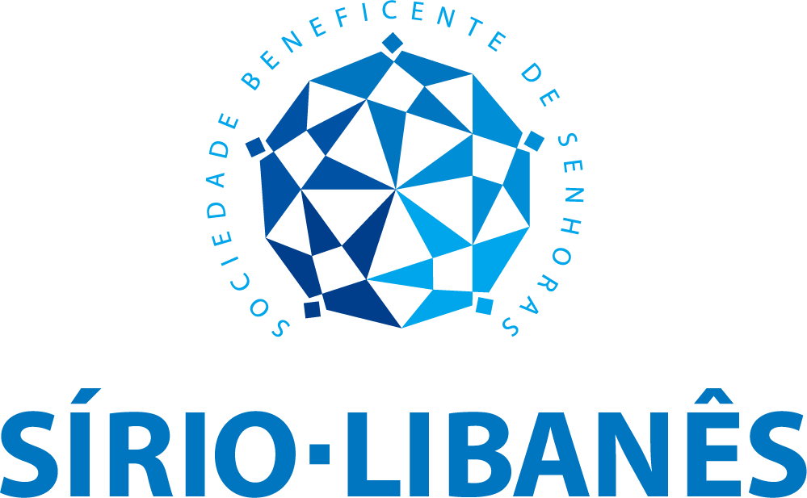

Uro-oncologia
Diagnóstico, estadiamento e tratamento cirúrgico dos cânceres urológicos — próstata, rim, bexiga e testículo. Abordagem baseada nas diretrizes mais atuais, com foco em resultados oncológicos, qualidade de vida e atendimento humanizado.

Dr. Marcelo Amaro é Urologista com formação pelo HC-FMUSP e com treinamento em centros de referência internacionais como:
Especializado no tratamento de:
Por meio de técnicas cirúrgicas minimamente invasivas.
Diagnóstico, estadiamento e tratamento cirúrgico dos cânceres urológicos — próstata, rim, bexiga e testículo. Abordagem baseada nas diretrizes mais atuais, com foco em resultados oncológicos, qualidade de vida e atendimento humanizado.
Tratamento completo de cálculos nos rins, ureteres e bexiga. A técnica é escolhida individualmente — do tratamento clínico à cirurgia minimamente invasiva.
Avaliação e tratamento do aumento benigno da próstata, desde medicamentos até cirurgia minimamente invasiva moderna, com recuperação rápida e preservação da qualidade miccional.
Procedimentos urológicos por via robótica e laparoscópica, com menor sangramento, menos dor pós-operatória e retorno mais rápido às atividades do dia a dia.
Residência Médica em Urologia pelo Hospital das Clínicas da Faculdade de Medicina da USP (HC-FMUSP).
Doutorando pela Faculdade de Medicina da USP (FMUSP).
Médico Voluntário do Instituto do Câncer do Estado de São Paulo (ICESP).
Observership em Cirurgia Minimamente Invasiva e Robótica:
Participação em congressos nacionais e internacionais.
Publicação de artigos científicos internacionais e capítulos de livros.
Atuação com foco em uro-oncologia, litíase urinária, hiperplasia prostática e cirurgia minimamente invasiva.
Residência pelo HC-FMUSP, doutorado em andamento pela Faculdade de Medicina da USP e observerships em três centros de referência mundial em cirurgia robótica — Johns Hopkins (EUA), Heidelberg (Alemanha) e Aalst (Bélgica) — garantindo uma prática cirúrgica alinhada ao que há de mais avançado.
Treinamento em técnicas laparoscópicas e robóticas, oferecendo ao paciente procedimentos com maior precisão, menos dor e retorno mais rápido às atividades.
Consultas com tempo adequado para esclarecer todas as dúvidas, explicar o diagnóstico com clareza e construir o plano de tratamento junto com o paciente.


Prostatectomia radical (Câncer de próstata)
Nefrectomia parcial/radical (Câncer de rim)
Enucleação prostática a laser (HoLEP)
Prostatectomia transvesical robótica (PTV)
Ressecção transuretral da próstata (RTU-P)
MISTs — Técnicas minimamente invasivas
(Rezum, UroLift)
Ureteroscopia flexível com laser (cálculos de rim e ureter)
Contamos com atendimento on-line e presencial com agendamento prévio em excelente localização e fácil acesso.
Agendar Consulta via WhatsApp
Av. Antártica, 675 - Conj 19 - Perdizes
São Paulo - SP